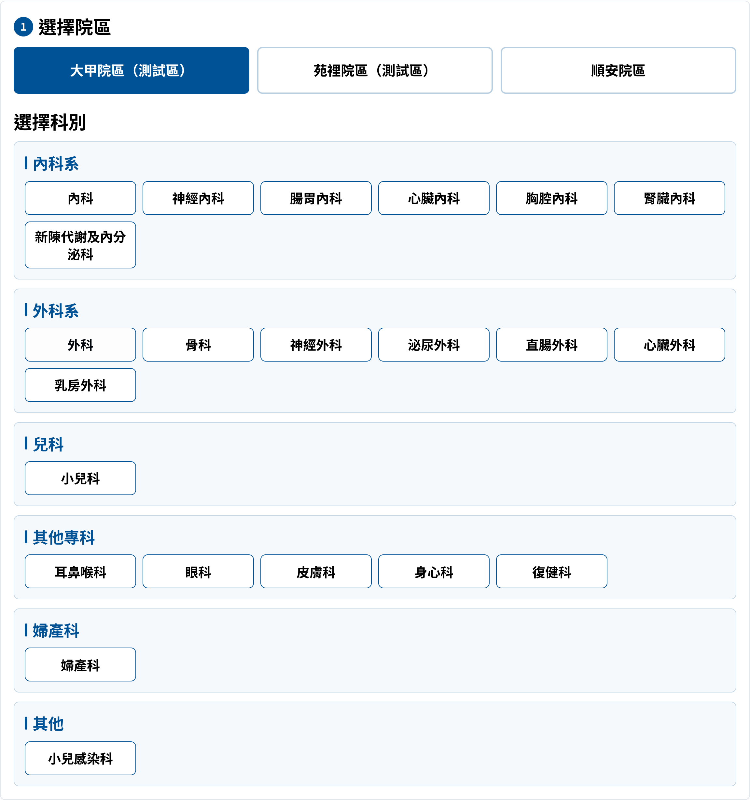
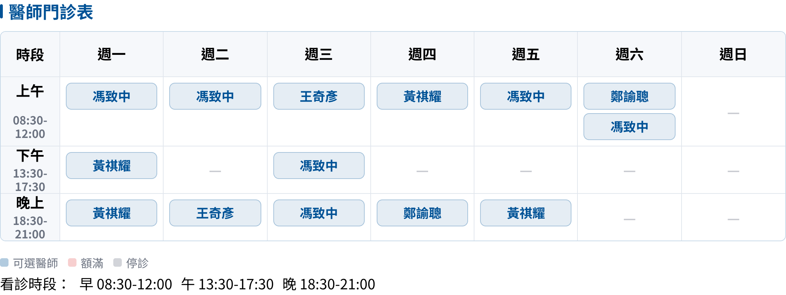
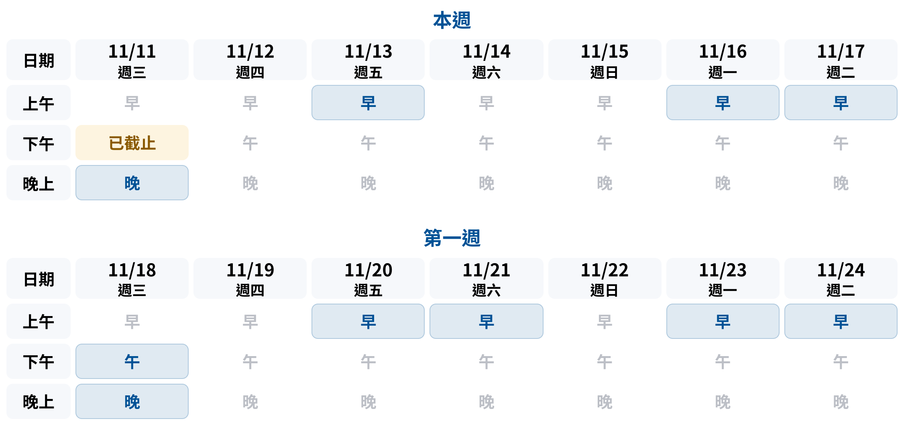
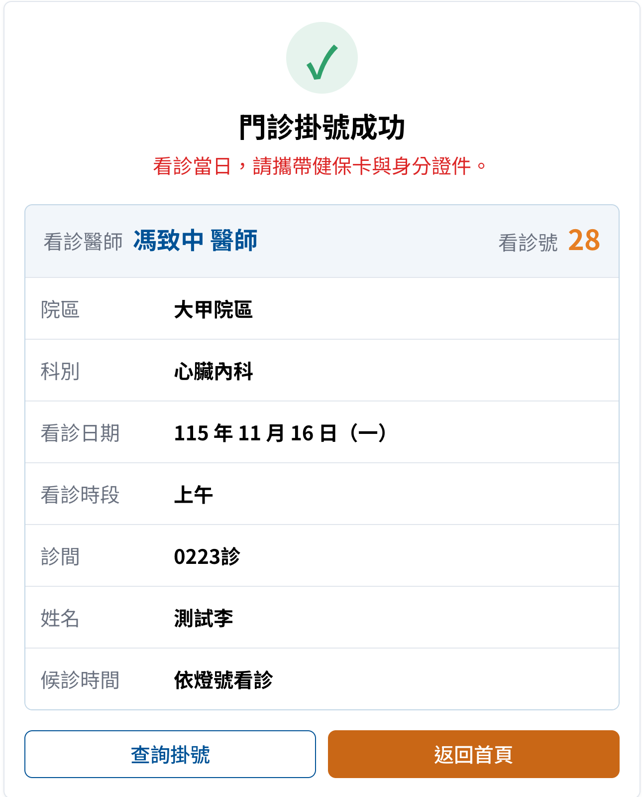
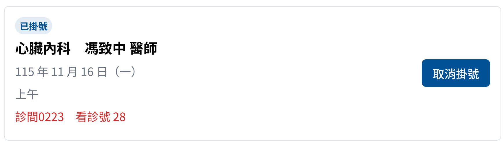
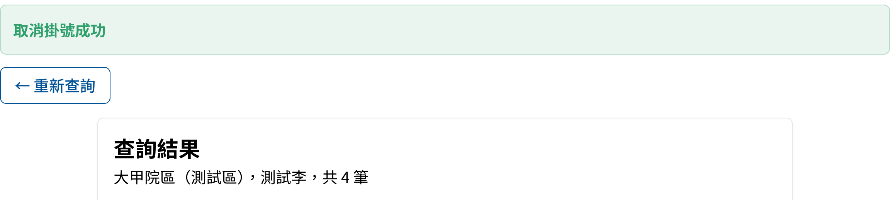

已完成串接的院方 API、目前還缺的資料，
以及需要貴院確認的規則與時程
| 類別 | 院方 API | 狀態 |
|---|---|---|
| 院區與科別 | campuses、departments | 已串接 |
| 醫師 | doctors | 已串接 |
| 門診時段 | slots、schedule | 已串接 |
| 掛號 | book | 已串接 |
| 查詢、取消 | bookings/query、bookings/cancel | 已串接 |



測試站畫面，連接院方測試 API，2026/11/11 擷取。掛號、查詢、取消已使用院方指定的測試病患完成實測。



2026/11/11 實測。本機測試環境，連接院方測試 API，使用院方提供的測試病患資料；測試掛號均已取消。
| 項目 | 目前狀況 | 需要院方提供 | 預計補上時間 |
|---|---|---|---|
| 看診進度 | 尚無 API 網站頁面已完成 | 各診間目前號碼、等候人數的資料 | |
| 初診預約 | 尚無 API 查無病患時只回「查無資料」 | 初診建檔與掛號 API，並區分新病患與資料不符 | |
| 額滿狀態 | 部分可用 停診可辨識，未出現過額滿的狀態值 | 門診資料加上「額滿」狀態 | |
| 停代診 | 部分可用 停診可辨識，缺代診資訊 | 門診資料加上「代診」狀態與代診醫師 |
| 欄位 | 說明 |
|---|---|
| 院區、時段 | 上午、下午、晚上 |
| 科別、醫師 | 沿用門診資料的代碼 |
| 診間 | 例如 2 診 |
| 目前號碼 | 正在看診的號碼 |
| 等候人數 | 尚未看診的人數 |
| 更新時間 | 資料最後更新的時間 |
依院方系統最方便的方式提供即可，網站端配合調整。
▸ 院方需要：初診建檔與掛號 API、初診單欄位對照、個資告知條款
| 院方比對身分證 | 建議回傳 | 網站引導 |
|---|---|---|
| 從未出現過 | NEW_PATIENT | 確認是第一次就診 → 初診 |
| 存在，生日不符 | IDENTITY_MISMATCH | 請檢查生日或洽櫃檯 |
| 存在，生日相符 | （正常掛號） | 一般掛號流程 |
| 狀態值 | 意義 | 網站顯示 |
|---|---|---|
| available | 可掛號 | 可以點選掛號 |
| stopped | 停診 | 停代診頁列為停診 |
| closed | 已截止 | 灰色、不能點 |
| full新增 | 額滿 | 標示額滿、不能點 |
| substitute新增 | 代診 | 停代診頁列為「某某醫師代診」 |
狀態名稱可依院方系統習慣調整；請假且無人代診時，以「停診」表示即可。
{
"date": "1151120",
"session": "1",
"doctorId": "A123",
"status": "substitute",
"substituteDoctorId": "A456"
}| 項目 | 現行官網說明 | 院方 API／新網站目前 | 請確認 |
|---|---|---|---|
| 可預約天數 | 28 天內的門診 | API 固定回傳今天起 35 天 | 開放 28 天或 35 天 |
| 網路掛號時間 | 早上 07:00 至晚上 22:00 | 新網站 24 小時可掛號 | API 是否限制時間、網站是否比照 |
| 取消期限 | 看診前一天 | 看診當天仍可按取消 | 當天的掛號能不能取消 |
能否提供各診間目前號碼、等候人數；提供方式與更新頻率
初診建檔 API 的欄位與規格；回傳時區分新病患與身分資料不符
門診資料加上額滿狀態
門診資料加上代診狀態與代診醫師代碼
另請確認：可預約 28 天或 35 天｜網路掛號是否限制 07:00–22:00｜看診當天能否取消｜「0223 診」的意義｜不送手機能否掛號